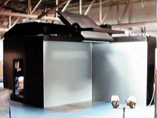
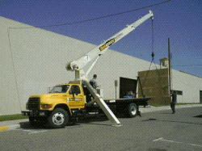

| |
|
RAVE RAVE is a visualization tool. It is used for 3/4 emersions into data. A high-powered projector uses mirrors to project onto two panels and the floor. A person steps into the projections and with the aid of 3-D glasses becomes emersed. A person finds this useful because a more realistic interpretation of data can be experienced. The 3-D environment is deeper than a flat 2-D screen. A person can see multiple areas of data being manipulated all at once. One of the benefits to having large quanities of space is the ability to store equipment. Los Alamos National Laboratories had a temporary storage crunch. Dr. Tom Caudell suggested that the AHPCC could store it in their high bay. Both LANL and the AHPCC win! We continue developing relationships while the RAVE is used.  On July 18, 2000 the RAVE moved back to Los Alamos National Laboratories. The AHPCC needed to return the hardware in order to begin renovations on its roof. The crates held highly sensistive panes of glass. For more information, please contact Dr. Tom Caudell. Dr Tom Caudell |
|||||||||||||
 |
||||||||||||||
|
||||||||||||||